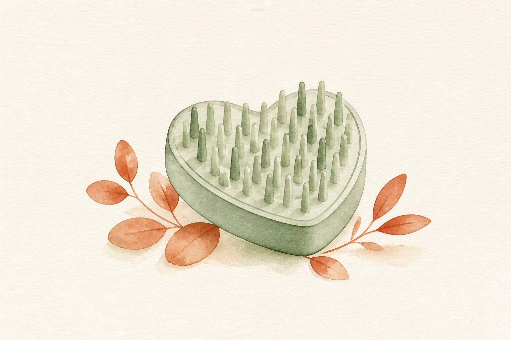
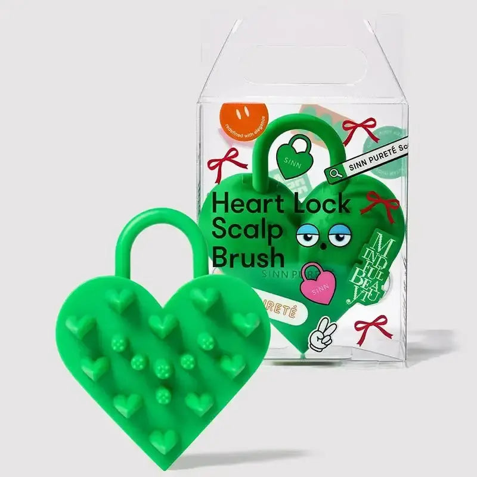

EMPATHY
こんな「塗ったのに、そこで終わっている」、心当たりありませんか。
- 頭皮用のアイテムを塗ったあと、マッサージまでちゃんとやれた日が数えるほどしかない
- シャンプー中、指をワシャワシャ動かしているだけで「洗えた」ことにしている
- 爪が長い・ネイルをしているので、地肌をしっかり触るのが正直こわい
- マッサージを始めても、腕が上がったまま疲れて30秒でやめてしまう
- サロンでヘッドスパをしてもらった翌日の頭の軽さは覚えているのに、自宅ではあの触り方をまったく再現できていない
- 「頭皮ケア」を"何を塗るか"の話だと思っていて、"どう触るか"の話だと思ったことがなかった
- 髪をとかすブラシは持っているのに、地肌に当てるための道具は1つもない
一つでも頷いたなら、あと3分だけ読み進めてほしいんです。
私はこのシリーズで、6回かけてアイテムを揃えてきました。第2弾で毎日のシャンプーを変え、第1弾で洗い流さないトリートメントを足し、第3弾で仕上げのバームを加え、第4弾で週数回の集中ケアを挟み、第5弾で香りを乗せ、そして第6弾でついに頭皮まで下りてきた。合計¥34,046。自分でも、よくここまで来たと思います。
でも、第7弾を選ぶために6本を机に並べたとき、妙なことに気づいてしまったんです。
6本とも、ボトルでした。中身が入っていて、使えば減るものでした。つまり私が6回かけて買ってきたのは、ぜんぶ「塗るもの」だった。
じゃあ、それを塗る道具は?──ありませんでした。6回ぶん、ゼロです。
もっと言うと、第6弾のスカルプエッセンスの使い方には、はっきりこう書いてあります。「そのまま指の腹でなじませ、軽くマッサージ」。私はこの一文を、たぶん一度も真面目にやっていません。20プッシュして、髪を乾かして、終わり。
説明書に書いてある工程を飛ばしておいて、「うーん、まだ何か足りない気がする」と言っていたわけです。──足りなかったのは7本目のボトルじゃなくて、6本目をちゃんと使い切る手のほうだったのかもしれない、と思いました。

IF NOTHING CHANGES
正直に言うと、いちばん怖いのは「マッサージをサボっていること」そのものじゃありません。
やっていない自分の指で、¥34,046ぶんの"答え合わせ"をしてしまうことです。
考えてみてください。説明書どおりに使っていない状態で「あんまり変わらないな」と感じたら、人はどう結論づけるでしょうか。だいたい、こうです。──「この商品、私には合わなかったかも」。
商品を疑うんです。実行を疑わずに。
そして次に何をするかというと、7本目のボトルを探しに行く。もっと良さそうな成分、もっと評判のいいブランド、もっと高い1本。6本目を半分しか使えていないのに、7本目の比較記事を読み始めるんです。
私はこれを、市販品ジプシーだった頃に何十回とやってきました。"ジプシー"の正体って、実は「商品を変え続けること」じゃなくて、「実行を変えないまま、商品だけ変え続けること」だったんだと思います。
しかも、この構造はとても静かに続きます。塗るのは、3秒で終わります。だから続きます。マッサージは、1分かかります。腕も上がったままです。爪も気になります。やらなくても、その日は何も困りません。──痛みがないから、10年でも飛ばせてしまう。
半年後も、たぶん同じです。洗面台には7本目、8本目のボトルが増えていて、どれも8割くらい残ったまま並んでいる。そして相変わらず、シャンプー中は指をワシャワシャ動かしているだけ。
いちばんもったいないのは、ここです。第1〜6弾で、"何を使うか"の答えはもう出ているんです。出ていないのは、"それをどう届けるか"のほうだけ。
しかも皮肉なことに、答えのほうが安い。6本の平均は¥5,674でした。届ける側の道具は、¥2,200です。6本平均の、約39%。シリーズで唯一、¥3,000を切ります。
──足りなかったのは、7本目の中身じゃありませんでした。6本ぶんの中身を、ちゃんと頭皮まで運ぶ手のほうです。まだ間に合います。変えられるのは、今夜のシャンプー1回からです。
THE TURN
そこでたどり着いたのが、「ハートロック スカルプブラシ」でした。
ここで一つ、はっきりさせておきたいことがあります。第1〜6弾で紹介してきたものは、どれも「中身」でした。補修する、洗う、まとめる、集中ケアする、香らせる、頭皮に足す。種類は違っても、全部「何かを髪や頭皮に加えるもの」です。
これは欠点ではありません。むしろ当然です。髪と頭皮に足りないものを足すのが、ケアの基本だからです。6本とも、その役割をきちんと果たしてくれました。
一方で今回のアイテムは、そもそも役割の位置が違います。足すものではなく、足したものを届ける側。中身は一滴も入っていません。ハート型のブラシ、それだけです。
言ってしまえば、第1〜6弾が"何を"のケア。そしてこの1本が"どう"のケア。何を使うかは6回で決まりました。7回目は、どう使うかです。
私がこのブラシを選んだ理由は、大きく3つ。
中身が入っていないから、6本のどれとも競合しない
シリーズで初めて、「今使っているものを何ひとつ疑わなくていい回」です。置き換えも、買い替えも、比較検討も発生しません。シャンプーはそのまま、エッセンスもそのまま。触り方だけが変わります。
ドライとインバス、1本で2つの場面をカバーする
乾いた頭皮のドライブラシとしても、シャンプー中のシャンプーブラシとしても使えます。朝の身支度と夜のお風呂、どちらにも置ける。「生活のどこかで必ず1回は触る」状態を作りやすいのが、続ける道具としては大きいと感じました。
長さの異なる3種類のピンが、指では作れない当たりを出す
同じ長さのピンが並ぶブラシではなく、3種類の長さで構成されています。メーカーの説明では、これによって「痛気持ちいい」当たりになる設計とのこと。自分の指は5本とも同じ長さで、しかも爪が付いています。この差は、実際に当ててみると分かりやすい違いでした。
「何を塗るか」から、「それをどう届けるか」へ。6回かけて中身を揃えてきたからこそ、いま手のほうに投資する意味があります。
※本商品は頭皮ケア用のブラシ(道具)であり、化粧品・医薬部外品ではありません。育毛・発毛その他の効果を持つものではなく、感じ方には個人差があります。
THE PRODUCT
ハートロック スカルプブラシ(グリーン)とは
SINN PURETE(シンピュルテ)は、ヘアケア・スキンケアを展開しているブランド。第1〜6弾で紹介したどのブランドとも重なりません。今回がシリーズ初登場です。
そして商品そのものも、シリーズ初です。第1〜6弾は、洗い流さないトリートメント、シャンプー、バーム、ヘアマスク、香水オイル、スカルプエッセンス。呼び方は違っても、全部「化粧品」でした。今回は「道具」。カテゴリそのものが変わる、シリーズ唯一の1つになります。

- タイプ
- 頭皮ケアブラシ(ドライブラシ/シャンプーブラシ兼用の道具)
- 価格
- ¥2,200(税込)/ ALBUM ONLINE STORE・シリーズ最安
- カラー
- グリーン(ユニセックスで使える色味)
- 形状
- ハート型。手のひらになじむよう設計されたフォルム
- ピン
- 長さの異なる3種類のピンを配置。メーカー説明では「痛気持ちいい」当たりになる設計
- 保管
- 吊り下げ用フック付き。使用後に吊るして乾かせる
- 使う場所
- 頭皮(毛先ではありません)
- 使う場面
- 乾いた頭皮へのドライブラシ / シャンプー中のシャンプーブラシ
- ブランド
- SINN PURETE(シンピュルテ)・シリーズ初登場
- 位置づけ
- シリーズ初の「道具」カテゴリ(第1〜6弾はすべて化粧品)
- 減り方
- 消耗しない(シリーズで唯一の買い切りアイテム)
このブラシのいちばんの特徴は、「今のケアの工程を、1つも置き換えない」という点です。シャンプーもトリートメントもオイルもバームもエッセンスも、今のまま。第1〜6弾で作った流れには、何も手を加えません。変わるのは、その工程を"何で触るか"だけ。
そしてもう一つ、地味ですが決定的な違いがあります。──これは、減りません。
第1〜6弾は、すべて消耗品でした。使えば減り、なくなればまた買う。第6弾のエッセンスは180mLで約45日分。1年続ければ、年に何本か必要になります。このブラシは、¥2,200を一度払えば、そのあとは減りません。1年毎日使うなら1日あたり約6.0円、2年なら約3.0円。使えば使うほど1日あたりが下がっていく、唯一のアイテムです。
※耐久性は使用状況・お手入れ方法によって変わります。1日あたり単価は使用年数を仮定した概算です。
WHY IT WORKS
「で、結局それの何がいいの?」に、飾らず正直に答えます。
6回かけて「何を塗るか」を揃えてきたからこそ、7回目でようやく「ちゃんと使えているのか」に目が向きました。これは、6本ぶん遠回りしたからこそ出てきた、私のいちばん正直な実感です。
※上記は道具としての使い勝手に関する説明です。本商品は育毛・発毛等の効果を持つものではなく、感じ方には個人差があります。
WHY TRUST IT
正直に言うと、私は「新商品だから」だけでは商品を信じないタイプです。
それでもこのブラシを紹介したいと思えたのは、こんな背景があるからです。
シリーズで初めて、"置き換えリスク"がゼロの回
これまでの6回は、どれも「今使っているものをやめて、こっちにする?」という判断が伴いました。今回は伴いません。中身が入っていないので、競合しようがない。合わなかったとしても、失うのは¥2,200と、洗面所の場所だけです。
長さの異なる3種類のピンという、設計が明示されている
「気持ちいいブラシです」だけで終わらせず、3種類の長さという構造で説明されている点は、判断材料になりました。なんとなく良さそう、ではなく、なぜそう感じる設計なのかが言葉になっています。
ドライとインバスの両対応が、最初から想定されている
後から「濡れても使えます」と付け足された仕様ではなく、両方の場面で使う前提で作られています。だからこそ、吊り下げフックが最初から付いています。
吊り下げ用フックという、地味すぎる仕様
私はここをかなり評価しています。浴室で使う道具は、乾かせないと結局使われなくなるからです。「毎日使ってほしい」と思って設計しないと、この仕様は付きません。
¥2,200という、シリーズ最安の価格設定
第1弾¥3,740、第2弾¥4,180、第3弾¥4,290、第4弾¥7,260、第5弾¥8,800、第6弾¥5,776。合計¥34,046、平均¥5,674。第7弾は¥2,200。7回の中で唯一、¥3,000を切ります。しかも唯一、減りません。
サロン専売品を、公式通販でそのまま買える
今回紹介する ALBUM ONLINE STORE(株式会社ALBUM運営)は、美容室専売品を扱う美容通販サイト。第1弾のオラプレックス、第2弾・第4弾のケラスターゼ、第3弾のTHE HAIR BALM 997、第5弾のLOA、第6弾の資生堂プロフェッショナル、そして第7弾のSINN PURETE。7回ぜんぶ、ずっと同じお店です。
※価格・在庫は変動します。最新情報は必ず商品ページでご確認ください。
WHAT PEOPLE NOTICE
こんな使用感(声の傾向)
道具は、化粧品と違って「成分で語れない」アイテムです。だからこそ、盛らずに、触った感じをそのまま整理してみます。
当たりの強さについて
最初にドライで当てたとき、「あ、これ指では絶対にできないやつだ」と思いました。3種類の長さのピンが同時に当たるので、一点を押す感じではなく、面で捉えられる感覚があります。いわゆる「痛気持ちいい」で表現される当たりですが、力を入れすぎると普通に痛いので、ほぼ添えるだけで十分でした。
シャンプー中の使い勝手について
泡立ててから当てるとよく滑ります。私は「指で予洗い→泡立てる→ブラシで地肌を動かす」という順番に落ち着きました。いきなり乾いた髪にゴリゴリ使うより、泡がクッションになるぶん扱いやすいです。ただ、髪が長いと絡む場面はあるので、毛流れに逆らわず、根元だけを動かすのがコツでした。
持ちやすさについて
ハート型なので、握り込むというより手のひらに乗せて動かす感じになります。ぎゅっと握らなくていいぶん、腕の疲れ方がだいぶ違いました。私が指マッサージを30秒でやめていた最大の理由は、実は「腕が疲れるから」だったので、ここは地味に効いています。
保管について
吊り下げ用フックが本当にありがたいです。浴室に置きっぱなしにする道具は、水が溜まると使う気が失せます。吊るせるだけで、翌日また手に取れる。続く道具って、たぶんこういう差です。
ネイルをしている人にとって
私はここが一番の変化でした。爪が伸びていると、地肌を触るのがどうしても怖くなります。力加減が分からないので、結局「表面をなでるだけ」になる。ピンが当たる道具に持ち替えるだけで、その怖さが消えました。
続け方について
これがいちばん正直な話なのですが、頭皮ケアは"実感で続けるアイテム"ではありません。ただ、このブラシに関しては「気持ちいいから続く」という、これまでの6本にはなかった続き方をしています。効くから続けるのではなく、やりたいから続く。サボりがちだった第6弾のエッセンスを、私はこれでやっと毎日使えています。
もちろん、地肌の状態も髪質も人それぞれ。だからこそ、「自分の生活のどこに置けるか」を一度試してみる価値がある道具だと思っています。
※上記は一般的な使用感の傾向および個人の感想であり、効果を保証するものではありません。力の入れすぎは頭皮を傷める原因になります。やさしくお使いください。
FAQ
よくある質問
ブラシに¥2,200って、正直高くないですか?
第6弾のスカルプエッセンスと一緒に使えますか?
第1〜6弾のケアと併用できますか?
ドライとシャンプー中、どちらで使うのがいいですか?
爪が長い・ネイルをしていても使えますか?
髪が長いと絡みませんか?
力はどのくらい入れればいいですか?
毎日使っても大丈夫ですか?
男性が使っても大丈夫ですか?
お手入れはどうすればいいですか?
どのくらいで実感できますか?
頭皮が敏感なのですが大丈夫ですか?
カラーやパーマをしていても使えますか?
まず1つだけ試したいのですが、それでも大丈夫?
どこで買えますか?
ABOUT THE PRICE
価格の考え方
ハートロック スカルプブラシは ¥2,200(税込)。このシリーズで紹介してきた7つの中で、いちばん安い価格です。
これまでの6本を並べてみます。¥3,740 / ¥4,180 / ¥4,290 / ¥7,260 / ¥8,800 / ¥5,776。合計¥34,046、1本あたりの平均は¥5,674。今回の¥2,200は、その平均の約39%。唯一、¥3,000を切ります。第6弾(¥5,776)と比べると、¥3,576も下です。
ただ、ここで「安いから買いやすいですよ」で終わらせたくないんです。価格が下がっている理由は、安物だからではなく、性質が違うからです。
第1〜6弾は、すべて消耗品でした。使えば減ります。第6弾のエッセンスは180mLで約45日分。毎日続けるなら、1年でおおよそ8本前後が必要になる計算です。
このブラシは、減りません。¥2,200を一度払えば、そのあとの支出はゼロ。1年間毎日使うなら1日あたり約6.0円。2年使えば約3.0円。使い続けるほど1日あたりの単価が下がっていく、7つの中で唯一のアイテムです。
そしてもう一度、正直に振り返らせてください。私はこのシリーズで、6本・合計¥34,046を「中身」に使ってきました。同じ期間、それを頭皮まで届ける道具に使った金額は¥0です。中身に¥34,046、届ける手に¥0。比率でいえば、100対0。6本ぶんのボトルを机に並べて、その数字を眺めたとき、私はちょっと笑ってしまいました。"全部を中身に投じてきたコスト"のほうが、よっぽど偏っていたからです。
そしてもう一つ。これは1本で2役です。乾いた頭皮に使うドライブラシと、シャンプー中のシャンプーブラシ。場面ごとに2つ持たなくていい。高いか安いかは、値札だけでは決まりません。"何を塗るか"に¥34,046を使ってきた自分が、"それをどう届けるか"に¥2,200を出せないのは、さすがに変だと思ったんです。
※価格・在庫は変動します。最新情報は必ず商品ページでご確認ください。1日あたりの単価は使用年数を仮定した概算であり、耐久性は使用状況やお手入れ方法によって変わります。
BEFORE YOU GO
安心して試すために
「ブラシ1つで何か変わるの?」その気持ち、よく分かります。私も6回ぶん、まったく同じことを思っていました。頭皮ケアといえば"何を塗るか"の話で、道具の話だとは考えたこともなかった。
だからこそ、この回は「何も失わない」という点を強調しておきたいんです。
これまでの6回は、どれも判断が必要でした。今のシャンプーをやめてこっちにするか。今のオイルより高いこれを買うか。比較して、迷って、置き換える。それなりの覚悟が要ります。
今回は、その判断がありません。中身が入っていないので、何とも競合しない。シャンプーも、トリートメントも、エッセンスも、今のまま続けられます。仮に「私には合わなかった」となっても、失うのは¥2,200と、浴室のフックひとつぶんの場所だけです。
そして、いきなり7つすべてを揃える必要もまったくありません。第1〜6弾で紹介したケアを、まず自分のペースで試す。そのうえで「塗るものは揃ったのに、ちゃんと使えている気がしない」と感じたタイミングで、この1つを足す。その順番でまったく問題ありません。
というより、この7つの中でいちばん"順番を選ばない"のが、たぶんこのブラシです。中身のアイテムは、髪質や地肌の状態によって合う・合わないが出ます。道具は、今どのアイテムを使っていようと、その横に置けます。何かをやめる必要も、置き換える必要もありません。
何を塗るかは6回で決まりました。7回目は、どう届けるかです。大きく生活を変える買い物ではなく、「今夜のシャンプーを、指ではなくこれでやってみる」だけの、小さな一歩です。ケアの中身が置き換わらないという気軽さこそが、続けられる理由になります。
※本商品は頭皮ケア用のブラシ(道具)であり、化粧品・医薬部外品ではありません。育毛・発毛その他の効果を持つものではなく、感じ方には個人差があります。
※力の入れすぎは頭皮を傷める原因になります。やさしくお使いください。頭皮に異常が現れた場合は使用を中止し、必要に応じて医師等にご相談ください。
※価格・在庫・配送などの詳細は、リンク先の販売ページの情報をご確認ください。
LAST WORD
「洗う」「足す」「整える」「特別ケア」「香り」「頭皮」。6回かけて紹介してきたアイテムで、"何を塗るか"はもう出揃っています。
でも、それはぜんぶ「中身」の話でした。
中身をどこに、どうやって届けるかの話は、6回とも一度も出てきていません。
このまま7本目のボトルを探し続けて、「まだ何か足りないのかも」と思いながらまた半年過ごすのか。それとも、6本ぶんの中身をちゃんと届ける手を1つ持って、今ある6本を書かれたとおりに使い切るのか。
小さな選択に見えて、洗面台の景色は、案外ここで変わります。そして、変えられるのは、いつだって"今夜のシャンプー1回"からです。
追伸
正直に言うと、このブラシも「魔法の1つ」ではありません。これは道具であり、育毛・発毛などの効果を持つものではありません。使った瞬間に何かが生えるわけでも、髪質が変わるわけでもない。感じ方には個人差があります。
それでも私がこれを紹介したいのは、「商品を疑う前に、実行を疑う」を、6回目にしてやっと覚えたからです。足りなかったのは、中身の質でも量でも本数でもなく、"何を"と"どう"を、別の話として持つという考え方でした。
7回に分けて紹介してきましたが、この7つを全部揃える必要はまったくありません。市販品ジプシーだった頃の私は、うまくいかないたびに商品を変えていました。使い方を変えたことは、たぶん一度もなかった。だからボトルだけが増えて、どれも8割残ったまま並んでいたんだと思います。
もし、アイテムはひと通り揃っているのに、「ちゃんと使えている気がしない」がずっと消えていないなら。足りない最後の1つは、たぶん7本目のボトルではなく、それを持つ手のほうです。今夜のシャンプー、指ではなくこれで洗ってみてください。